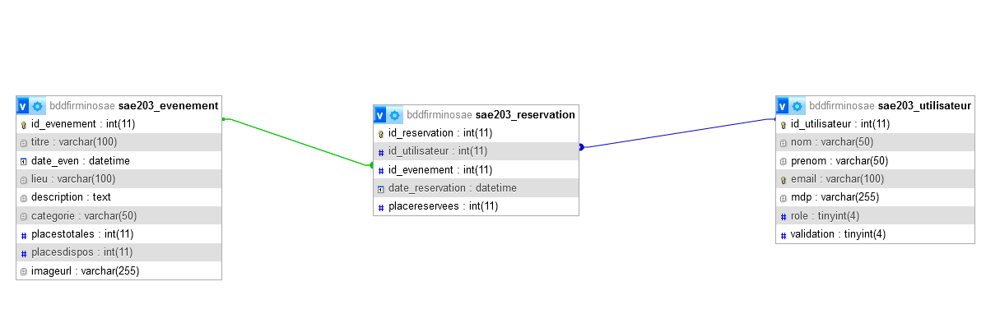

Dans le cadre de cette SAE, j’ai conçu un site web dynamique de gestion de billetterie pour des événements. Le projet m’a permis de mettre en œuvre une base de données relationnelle,
de développer une interface en PHP avec des espaces utilisateur et administrateur, et d’appliquer des notions de sécurité (validation des entrées, protection des mots de passe,
relations en base avec clés étrangères, etc.).
J’ai réalisé toutes les fonctionnalités principales : inscription avec validation par mail, connexion sécurisée, réservation et annulation d’événements, ainsi qu’une interface d’administration permettant d’ajouter, modifier ou supprimer des événements. Un MCD/MPD a été produit, et le projet a été développé en local avec migration prévue sur serveur distant.


Sur ce projet, j’ai été impliqué à plusieurs niveaux :
• Réalisation de la base de donnée MySQL
• Codage du site HTML et PHP
• Migration du site vers un serveur
• Prendre en compte la base de donnée dans son site web
• Sécurité des données
• Mise à jour de la base de donée automatique en fonction des actions réalisés
Ce projet m’a permis de consolider mes compétences en back-end.
lien vers le site


